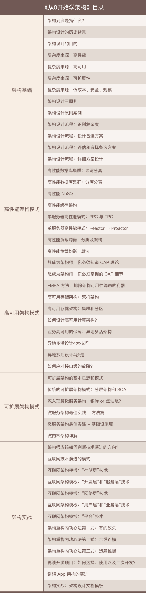

从0开始学架构
特别放送
专栏简介
程序员的成长绕不开架构设计，有时架构设计就像鸿沟一样挡在程序员晋升之路上，只要跨过去就可以海阔天空。
但不少技术能力很强的程序员依然不能完全掌握架构设计，这与架构设计的思维方式和训练机制与写代码有很大差异有关，加之人们对架构设计存在很多误区，缺乏一套行之有效的架构设计方法论，就可能导致在实践过程中把握不住重点、分不清主次；或者，没有彻底掌握架构设计的原则，在设计上举棋不定。
也许你还是个架构新手，缺乏一个可以参考指导的架构设计流程；或者，虽然有一定经验，但还不能对已有模式进行技术创新。这些问题都可以在极客时间专栏《从 0 开始学架构》中找到答案。
李运华，资深技术专家。目前带领多个研发团队，承担架构设计、架构重构、技术团队管理、技术培训等职责，曾就职于华为和 UCWeb，写过《面向对象葵花宝典》一书。
华仔从 2006 年开始接触架构设计，花费 8 年时间掌握架构设计的精髓，走过了从程序员到架构师的蜕变之路，也踩过了这条路上的很多坑。后来他带了团队，特别是做了职业等级晋升评委后，看到了一大批优秀程序员的晋升卡在架构设计上，也越来越能体会架构设计特性所导致的学习和实战方面的问题。
在本专栏中，华仔会从架构基础、三大架构模式和实战的角度分享他一整套的架构设计方法论，希望你学习后不仅能够快速理解陌生的架构设计，自己也能对架构设计游刃有余，并且可以给身边正在迷惘的同学指点迷津，实践所学，分享所学。
华仔曾在专栏发布之初立下 flag，“技术既改变自己，也惠泽他人”，他将在专栏结束后，按照订阅人数每人捐出一份免费午餐。现在本专栏已更新完毕，华仔也兑现了承诺，感谢你和华仔一起点亮希望！
专栏模块
专栏共 50 期，主要分为 5 部分。
- 架构基础：将介绍架构设计的历史背景，阐述架构相关的概念以及架构设计的本质；提炼三个核心架构设计原则；详细描述架构设计的标准流程和步骤。
- 高性能架构模式：将介绍高性能数据库集群读写分离、分库分表两种方案，NoSQL 方案的典型特征和应用场景，缓存的架构设计三大要点；介绍 PPC、TPC、Reactor、Proactor 模型提升性能，以及负载均衡的分类与架构、算法与优缺点。
- 高可用架构模式：将介绍 CAP 原理的理解和应用、FMEA 分析方法；从主备、主从、主主、集群、分区详解常见的高可用存储架构；给出如何设计高可用计算架构；使用异地多活方案保障业务高可用的技巧和步骤。
- 可扩展架构模式：将概述可扩展模式及其基本思想，详解分层架构、SOA 架构、微服务及微内核架构。
- 架构实战：将理论与案例结合，在实战中落地专栏传递的架构原则、架构流程和架构模式。
专栏详细目录

适宜人群
想从 0 开始学习架构设计的程序员；想拓展架构视野提升技术能力的架构师；职业晋升遇到瓶颈的程序员；希望培养架构思维的所有技术人。